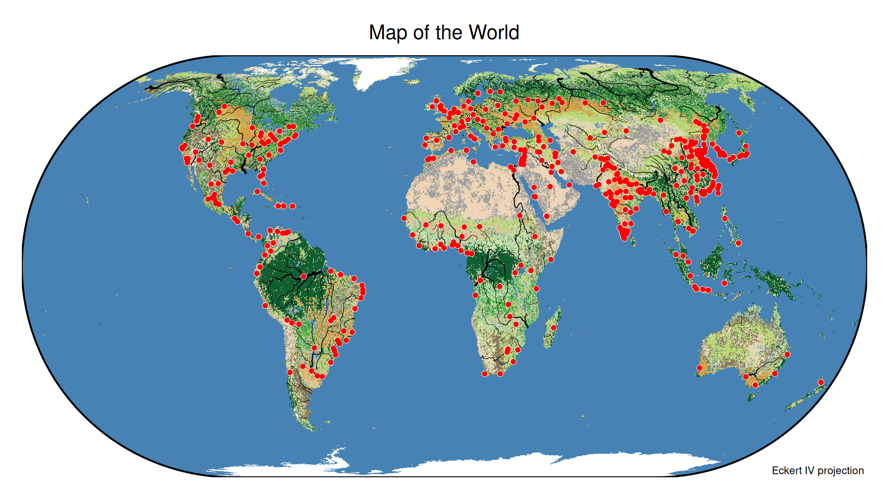

About the data
We use a couple of spatial data objects contained in tmap: World_rivers, land and metro.
Terrain map
tm_shape(land) +
tm_raster(col = "cover") +
#tm_shape(World) +
# tm_borders() +
tm_shape(World_rivers) +
tm_lines(lwd = "strokelwd",
lwd.scale = tm_scale_asis(values.scale = 0.2)) +
tm_shape(metro) +
tm_symbols(shape = 20, size = 0.6, fill = "white") +
tm_symbols(shape = 20, size = 0.5, fill = "red") +
tm_crs("+proj=eck4") +
tm_layout(earth_boundary = TRUE,
earth_boundary.lwd = 2,
legend.show = FALSE, # option to disable all legends
frame = FALSE,
space.color = "white") +
tm_title("Map of the World",
position = tm_pos_out(cell.h = "center", cell.v = "top", pos.h = "center")) +
tm_credits("Eckert IV projection", position = c("RIGHT", "BOTTOM"))
#> Warning: ! Unable to warp stars. Stars will be transformed now (which will take some
#> time).
Note: upper case position spefications (last line) means tight to the right bottom corner
Classic style
tmap_style("classic")
#> style set to "classic"
#> other available styles are: "white" (tmap default), "gray", "natural", "cobalt", "albatross", "beaver", "bw", "watercolor"
#> tmap v3 styles: "v3" (tmap v3 default), "gray_v3", "natural_v3", "cobalt_v3", "albatross_v3", "beaver_v3", "bw_v3", "classic_v3", "watercolor_v3"
tmap_last()
#> Warning: ! Unable to warp stars. Stars will be transformed now (which will take some
#> time).